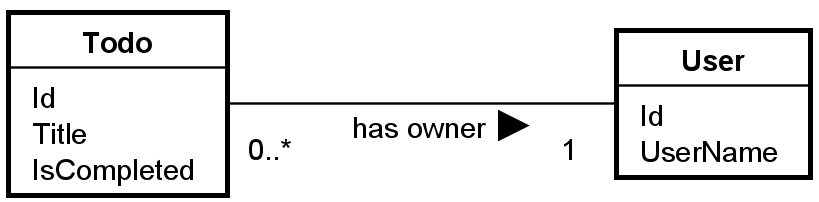
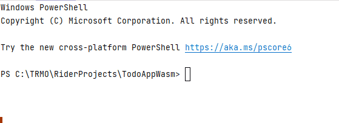
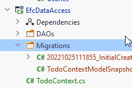

- 1 Introduction
- 2 Architecture
- 3 New Component
- 4 DAO Implementations
- 5 +Add EFC
- 6 +Installing db tools
- 7 +Create DbContext
- 8 Configuring tables
- 9 Configuring Relationships
- 10 +Create Database
- 11 Add User
- 12 Get Users
- 13 Add Todo
- 14 Get Todos
- 15 Complete Todo
- 16 Delete Todo
- 17 The End
Introduction
This is the third part of a 3 part tutorial series.
You should already have the Todo Web API in place from the first part, and the Blazor-WASM app from the second tutorial. We will continue working in the same Solution.
This tutorial will cover swapping out the current JSON-data layer with a layer using Entity Framework Core and SQLite.
We will make modifications to the server side. The client will not be touched, as it does not care how the data is saved/loaded.
Didn't do Parts 1 and 2?
If you don't have a working app based on part 1 and 2, you can just clone a branch from GitHub, which will give the code from 1 and 2.
This is the branch: https://github.com/TroelsMortensen/WasmTodo/tree/018_PopupSuccessMessage
It is the last of part 2. If you clone this, you will have the code, which is the starting point of this tutorial.
Features
We still have the same features, i.e. user stories as in the previous two tutorials, however, they are less interesting in this part.
Instead, we must make substitute classes for TodoFileDao and UserFileDao. The new classes will implement the same interfaces,
which will make it easy ot let the Web API use the new layer instead of the old. It requires only a few modifications to WebAPI/Program.cs, where we register new implementations of the interfaces.
The new EFC DAO implementations will then be injected into the Logic layer.
We will still implement the methods in the same order as the user stories, so that we can test along the way.
Branches
There will be only two branches:
Comment
Notice how some steps are prefixed with a "+". This is because these are the main steps of setting up a database.
This tutorial will contain much information besides the basic setup, e.g. related to Todos and Users and general design discussion, etc.
So, when you need to set up EFC for your project or other, the +-marked steps are the relevant ones (I hope).
Let's go
That should be all, let us get started.
Architecture
We are going to add a component to house the functionality of using Entity Framework Core for data management.
Below is a low detailed class diagram, you saw it back in part 1:
You don't currently have the EfcDataAccess component, but we will make it shortly.
We put the I*Dao interfaces into the Application component to make it easier to swap out the implementations, and we will see this in a minute.
This is where Dependency Inversion Principle and Dependency Injection comes into play.
New Component
Let us go ahead and create a new component/project in your solution.
It is a class library, call it "EfcDataAccess".

Which will result in a solution structure like this:

Your new library contains a dummy Class1, delete it.
Dependencies
The below is a component-diagram, and the dotted arrows shows the inter-component dependencies. Most of them was setup in the first tutorial:

Remember how the dependencies were supposed to flow according to Clean Architecture. The ones from WebAPI to Data components is unfortunate but necessary. And do not cause too much trouble, anyway.
Who knows about who?
Application depends on Domain.
The WebAPI depends on Application, because the Controller classes need to call the methods in the Logic interfaces.
The FileData depends on Application, because the DAO classes in FileData must implement interfaces located in Application.
The WebAPI also knows about FileData and EfcDataAccess, only because it is in WebAPI/Program.cs we register services, including the implementations of the IUserDao and ITodoDao interfaces.
Because of transitive dependency both WebAPI, FileData, and EfcDataAccess knows about Domain.
We need to set up two new dependencies:
- WebAPI -> EfcDataAccess
- EfcDataAccess -> Application
Go ahead and do that.
EFC DAO Implementations
Inside EfcDataAccess create a folder (similar to what we have in FileDate): "DAOs".
We start by creating the two implementations, just so they are in place. Then we implement the methods one by one.
Create the two following classes:
TodoEfcDao class
Create this class in EfcDataAccess/DAOs.
Implement the interface "ITodoDao", then include the inherited methods. Your class now looks like this:
public class TodoEfcDao : ITodoDao
{
public Task<Todo> CreateAsync(Todo todo)
{
throw new NotImplementedException();
}
public Task<IEnumerable<Todo>> GetAsync(SearchTodoParametersDto searchParameters)
{
throw new NotImplementedException();
}
public Task UpdateAsync(Todo todo)
{
throw new NotImplementedException();
}
public Task<Todo?> GetByIdAsync(int todoId)
{
throw new NotImplementedException();
}
public Task DeleteAsync(int id)
{
throw new NotImplementedException();
}
}
UserEfcDao class
Then create this class, implement interface and methods:
public class UserEfcDao : IUserDao
{
public Task<User> CreateAsync(User user)
{
throw new NotImplementedException();
}
public Task<User?> GetByUsernameAsync(string userName)
{
throw new NotImplementedException();
}
public Task<IEnumerable<User>> GetAsync(SearchUserParametersDto searchParameters)
{
throw new NotImplementedException();
}
public Task<User?> GetByIdAsync(int id)
{
throw new NotImplementedException();
}
}
Register services
Let's now swap out the DAO implementations, so that the server uses our new classes here. Obviously nothing will work, but we can then test along the way.
Open WebAPI/Program.cs
Find these lines:
builder.Services.AddScoped<FileContext>();
builder.Services.AddScoped<IUserDao, UserFileDao>();
builder.Services.AddScoped<IUserLogic, UserLogic>();
builder.Services.AddScoped<ITodoDao, TodoFileDao>();
builder.Services.AddScoped<ITodoLogic, TodoLogic>();
Lines 2 and 5 is where we specify that whenever a class requests an IUserDao or ITodoDao, that class wil actually get a UserFileDao or TodoFileDao, respectively.
Swap out the implementations, so it looks like this:
builder.Services.AddScoped<FileContext>();
builder.Services.AddScoped<IUserDao, UserEfcDao>();
builder.Services.AddScoped<IUserLogic, UserLogic>();
builder.Services.AddScoped<ITodoDao, TodoEfcDao>();
builder.Services.AddScoped<ITodoLogic, TodoLogic>();
Notice the 2nd type parameter is changed from e.g. UserFileDao to UserEfcDao.
That's it. We have now "removed" the FileData component, and we are using EfcDataAccess instead.
Test Dependencies
Now, the above code in the WebAPI/Program.cs was the only place, where anything outside the FileData component referenced code inside the FileData component. We have now completely detached this component from the system.
You can verify this, by deleting the FileData component, and you should see that your code still compiles.
So, a minor change to two lines of code, and we have swapped a large chunk of functionality. This is where the Dependency Inversion Principle shines.

We can now proceed with implementation of the functionality in EfcDataAccess component, without causing changes to the rest of the code base. (I thought, but we will see there are a few, minor problems..)
Test of the System
We can't test much, since we just broke all our functionality. But you should be able to run the Web API, and interact with the endpoints through the Swagger page. You will just get an error every time.
Before we can start fixing that, we need to set up the Entity Framework Core and the database.
Add EFC Packages
Entity Framework Core (EFC) is an "Object Relational Mapper". That means it can generate a relational database, with tables, attributes, relationships (foreign keys), etc, based on your domain classes, and their associations.
In our case we have a Todo and a User object, with an association from Todo to User, as the Owner.
If we use these model classes as the basis for EFC, it will generate two tables: Todos, Users. And there will be a foreign key from a Todo to a User.
We don't have to use SQL at all.
Add NuGet Packages
First, we need to include some packages in our EfcDataAccess project, so that we get access to the EFC functionality.
Open the NuGet manager, in Rider it's found here:

Or you can find a tab in the bottom bar in Rider.
You need to add three packages to EfcDataAccess:
- Microsoft.EntityFrameworkCore
- Microsoft.EntityFrameworkCore.Design
- Microsoft.EntityFrameworkCore.Sqlite
It is done like this:

- You search for the package.
- You select the correct package from the search results.
- You select the correct version. And which is that? All three packages should be the same version. At the time of writing the latest is 6.0.9. Pick the latest version, which is not marked preview or rc (whatever rc means), these are "beta" versions.
- Then you click the plus icon for the project to which you want to add this package.
- You click Install in the popup
Do this for all three packages.
Microsoft.EntityFrameworkCore and Microsoft.EntityFrameworkCore.Design is always needed, together they let you generate a database based on your domain classes.
Microsoft.EntityFrameworkCore.Sqlite is needed because we are going to use SQLite as our database. If you wish to use to use another database, e.g. MySQL or MSSQL or PostgreSQL, you'll have to import a specific NuGet package for that.
Installing Db Tools
You will need to install a command line interface (CLI) tool, which is used when creating/updating the database. This should be needed only once.
Open the terminal in Rider:

The terminal can also be found in the bottom menu bar of Rider, next to the NuGet package manager tab.
In the terminal type (it shouldn't matter which directory, you're in):
dotnet tool install -g dotnet-ef
The -g means the tool is installed globally, and so you shouldn't have to install it again, if you create a new solution, e.g. for your SEP3.

Create DbContext
You currently have a FileContext class, in FileData component, which is responsible for providing collections of Todo and User. It also loads data, and saves changes.
The DbContext has a similar responsibility. Furthermore, it is here we define how the database should look like. Sort of.
Create a new class, "TodoContext" (or whatever), inside EfcDataAccess component. It must inherit from DbContext, which is available after the installation of the NuGet packages, slide 5.
Specifying the Database
We need to specify which database to use. That's done in the inherited method OnConfiguring(...).
The class then currently looks like this:
public class TodoContext : DbContext
{
public DbSet<User> Users { get; set; }
public DbSet<Todo> Todos { get; set; }
protected override void OnConfiguring(DbContextOptionsBuilder optionsBuilder)
{
optionsBuilder.UseSqlite("Data Source = Todo.db");
}
}
We have defined two DbSets. When the database is generated, it will result in a table per DbSet, so we get a Todos table and a Users table.
We interact with the DbSet in a similar way to how we used the Collection of the FileContext.
We interact with this DbSet to add, get, update, remove Todos/Users from the database.
The OnConfiguring(...) method is here used to specify the database to be used. This is done with the method UseSqlite(...). This method is available because we added a NuGet package for SQLite.
If we were using Postgres, we would have a different method here, probably UsePostgres(..).
The argument is the name of the SQLite database file: Todo.db. For SQLite it is simple, there is no authentication, there is no actual database server running, so no ip or port. The "connection string" here is just a reference to the file. For other databases, you will have to provide a more elaborate connection string.
SQLite is just a single file, so that makes it easier to work with, instead of having to use Postgres or MySql or similar. And the argument of UseSqlite(..) is just pointing to this file.
You may sometimes need to specify the absolute path to the file, e.g.:
C:\TRMO\RiderProjects\TodoAppWasm\EfcDataAccess\Todo.db
This is because your main method is in one project, and the file is in another.
Alternatively a relative path should be possible too, something like:
..\EfcDataAccess\Todo.db
Note
The above method is a simple approach, however we have now hardcoded the database info, and it may not be easy to modify.
Usually the connection info will go into a configurations file, and the program will read from that. This provides the option of being able to change the connection string after the program is compiled and deployed.
Furthermore the optionsBuilder.UseSqlite can be done in Program.cs, so that it is easier to modify which database is used, without having to tough the TodoContext class. This increases flexibility, if you ever wish to change database. We don't, so we keep it simple.

It is left to the reader to google how to do that, if they're interested.
Other Database Providers
If you wanted to use a different DBMS, e.g. Postgres, you would add a NuGet package for a Postgres driver.
That would then include a method UsePostgres(...), in which you would provide connection arguments.
Configuring the Tables
Now, we need to add some information to be used when the database is generated. This includes:
- The attribute to use as Primary Key for each domain class
- Various constraints on the attributes, e.g. length, range, optional/required
There are two approaches:
- data annotation attributes in domain classes
- define it in DbContext subclass, i.e. the TodoContext
I will show both approaches here, and provide some discussion, so that you may prefer one approach over the other. Or a mix of the two.
1. Data Annotation Attributes
You have seen various attributes before, e.g. on the endpoints in your REST controllers, we would put [HttpGet]. And on the Controller itself we put [ApiController].
We can also put attributes in our domain classes to define the above mentioned configuration.
Primary Key
We have the property Todo::Id, it already acts as a "primary key", it is a unique identifier for a Todo.
If the property is called "Id", EFC will usually infer that this is the primary key.
If the property is called <class-name>Id, i.e. "TodoId", or "UserId", EFC will usually infer that this is the primary key.
In both cases, I believe the property must be of type int (not entirely sure, though).
You can also manually define a primary key property, by adding the [Key] attribute to a property:
public class Todo
{
[Key]
public int Id { get; set; }
public User Owner { get; }
public string Title { get; }
public bool IsCompleted { get; set; }
public Todo(User owner, string title)
{
Owner = owner;
Title = title;
}
}
I prefer to be explicit. It minimizes confusion, I believe.
If you do it like this, have an int Id, it will become SERIAL, i.e. if you don't provide a value other than 0, the database will generate the value of the Id based on the next available number.
Constraints
We can also define various constraints, as mentioned above. This can be done with attributes too.
If we make a property nullable, i.e. append a "?" on the type, like int?, we make that attribute in the database nullable: it is allowed to not be set. If we don't make a property nullable, then it is by default required in the database.
We can set a max length on e.g. Title like this:
[MaxLength(50)]
public string Title { get; }
We can define an allowed range on number types with e.g. [Range(0,250)].
You can find more attributes here
Web API and Blazor
If we apply these data attributes, they are actually also used by the Web API. Before an endpoint with a Todo argument is called, the data from the client is validated using the attributes. If the incoming data violates your attribute constraints, the request will just be denied, and not reach your endpoint. Read about Web API model validation here
Similarly, Blazor has a built in input-form with various components. These will also use the attribute to validate the data. Read about the Blazor input forms here. You were specifically not taught these, because making things from scratch gives you freedom. But now you know the basics, you are welcome to use various built in functionality or 3rd party libraries.
2. OnModelCreating(..) Method
This way does not require modification to the domain classes. We can set similar configuration by overwriting this method in the DbContext sub-class.
Primary Key
As above, the Key can be inferred by the naming of the property.
Alternatively, we can define primary keys on User and Todo like this (in TodoContext):
protected override void OnModelCreating(ModelBuilder modelBuilder)
{
modelBuilder.Entity<Todo>().HasKey(todo => todo.Id);
modelBuilder.Entity<User>().HasKey(user => user.Id);
}
In this way, we say that the entity "Todo" has a key, and the lambda expression defines which property to use as the key.
Constraints.
You can also do some of the constraints in OnModelCreating(..). Here is an example of limiting the Todo::Title to 50 characters:
modelBuilder.Entity<Todo>().Property(todo => todo.Title).HasMaxLength(50);
It seems you can not do exactly the same constraints as with the attributes. E.g. I have found no Range, or MinLength.
So, if you really need those constraints, you may have to use attributes as well.
Do We Need Constraints?
Now, whatever constraints we apply, they should obviously match the validation rules we implemented in the logic layer.
And because we already validate things in the logic layer, we could just neglect them in the database.
If we have the rules two places (or three if you do them in the client as well), then you will also have to update multiple places, if you need to change something.
We could then consider just having the constraints in the database, and not in logic layer. But then the logic layer needs to trust those rules are enforced elsewhere, which is probably not a good idea.
What if you change database and either forget some constraints, or your new database simply does not support that kind of constraint? You must then implement the constraint in the logic layer.
You will have to evaluate options and make a qualified choice.
Discussion
So which approach do you use? Attributes or the OnModelCreating method.
Many .NET EFC examples will gladly put the attributes in the model classes, and also use the OnModelCreating() method. This is also true for their Web API examples, and Blazor examples. And this can be just fine.
However..
Clean Architecture
Remember the Clean Architecture. General diagram on the left, our own system on the right:

On the right side is the structure for the Todo App. The general diagram (left) also considers things like using some third party api (external interfaces), and the web, and various devices (keyboard, mouse, hard drives, etc). The right hand diagram shows only what is relevant for our app.
We have three layers: Web API, logic, data access. And we have a domain component with the domain classes (and other stuff). These things are located in the green, red, and yellow rings. The blue is everything outside of that, outside the code of our server app: The client app (Blazor), the file/database where the data is stored, 3rd party stuff.
Dependencies go inward: A ring knows about the ring inside it. A ring knows nothing about the ring outside it.
Compare this to the component diagram and inter-component dependencies shown on slide 3.
Here's the important part: An outer ring may not cause changes to an inner ring.
What does that mean?
- The database is in an outer most ring (blue). If we initially use a relational database like Postgres, and later want to change to something else, it should not cause change anywhere else than the Gateways (our DAOs).
- If we swap out the REST Web API with a gRPC server, it should not cause changes to the red or yellow rings, i.e. logic or domain.
- If we introduce new logic rules, it should not cause modifications to the Domain.
This is at least the ideal, when doing a Clean-architecture approach, as we have attempted.
Attributes approach
If we use this approach, we need to modify the domain classes, i.e. the yellow ring.
Because of something in the green ring (DAOs). We use EFC (or Web API) and therefore, we modify the Domain.
If we change to not use EFC (or the Web API), these attributes are no longer relevant, and shouldn't be there.
This means that a change to the outer green ring, will cause a change to the inner yellow ring, and it goes against what is dictated by Clean architecture.
OnModelCreating appraoch
If we use this approach, all setup is done in the green ring, in the DAOs/Gateways area.
We need not touch the Domain. If we later remove EFC, and introduce a file storage again, or
just manually typing the SQL as in SEP2, or use a document based database, or whatever else, it will not cause changes to the Domain (inner yellow ring).
So with this approach, we adhere to the Clean principles.
Conclusion
Based on the above, you may conclude that you shall not use the attributes. That is not strictly true. As mentioned, many .NET examples will gladly use these attributes, and often together with the OnModelCreating method. The point is just that you make an informed choice.
It is not that often a database is swapped out. And if you use EFC and swap out one relational database for another, it is minimal work.
If you swap out a relational database for a document based, you will no longer need the attributes in Domain classes, but on the other hand, in this case they do nothing. So you may not need to remove them.
Configuring the tables
For now, the approach of this tutorial will be the OnModelCreating, without constraints.
In TodoContext, we then have the following method:
protected override void OnModelCreating(ModelBuilder modelBuilder)
{
modelBuilder.Entity<Todo>().HasKey(todo => todo.Id);
modelBuilder.Entity<User>().HasKey(user => user.Id);
}
Now, we have configured each table, with keys and constraints. What about relationships, i.e. foreign keys? This is how we bind the data together.
We will discuss that next, because there are again some considerations, and different approaches.
Configuring Relationships
An object oriented model have relationships between model classes, usually in the form of associations. Our domain classes are like this:

This means, the Todo has a reference to its owner, a User. The Todo knows about the User, but the User does not know about the Todo.
We could have flipped the association, and said the User includes a list of all their Todos.
The intention is that "a user can be assigned to many todos".
Usually in the object oriented domain, the relationships between classes are one-way, as above.
Generating Tables
If we generate the database now, we will get a table per domain class, i.e. Todo and User. We will get a relationship between them as shown in this EER-diagram:

Notice there is no "Owner" on Todo, because that is implied by the relationship.
And if you know your databases, you know this is implemented in the database as these tables:
Relational schema
Todo(Id, Title, IsCompleted, Owner)
Primary key: Id
Foreign key: Owner references User(Id)
User(Id, UserName)
Primary key: Id
So, the Todo gets a foreign key to the User.
This is what EFC will generate for us, whether we use the object oriented association of "Todo -> User" or "Todo <- User". Either way, it is a 1:* relationship, which results in the above relational schema.
What is a Navigation Property?
The relationship is implemented in the database as a foreign key, and in the domain classes, we use an association, i.e.:
- Todo has an association (Owner) to User, or
- User could have a list of Todos
This association is called a "Navigation Property", it is used to navigate around between objects. Essentially it is an object oriented implementation of a foreign key.
Two-Way Navigation Properties
Currently, our domain classes have a one-way navigation property, i.e. Todo -> User.
Sometimes, you may want to make a two-way relationship, i.e. add Navigation Properties on both sides. This can vastly simplify some queries against the database, depending on what side of the data you start from. Example:
- If you want to load a Todo with the User, it is easy because the Todo includes the User.
- If you want to load a User with all its Todos, it is much more complicated, because Users do not know about their Todos.
In the latter example, you would have to go through all Todos, and check if their User is the one, you wish to load.
If we add a Navigation Property, User -> Todo (i.e. the list in User), it is easily loaded: Find a User, also load the associated Todos.
So, often it is a benefit to have two-way navigation properties, and this is commonly seen.
The classes would then look like this:
Notice the User has a collection of all Todos assigned to it.
However:
Clean-like approach
Remember the discussion on the previous slide. We are again about the modify domain classes, because of an outer ring.
Consequences
This circular dependency can have unforeseen consequences because object oriented classes don't always do too well with these. If we keep some data in memory and wish to update the assignee of a Todo, we would have to modify both the TodoOwner and the UserTodos, i.e. double work, with the potential of forgetting some updates.\ We might need this double work for both updates, deletes, creates. And with a larger domain, this can escalate.
JSON cannot be serialized with circular dependencies, so if we did the two-way, we could no longer use our implementation of the File storage. Now, maybe that's not a big concern, because the File storage functionality is in an outer ring, and shouldn't affect the domain. But still.
The Fix?
If we really want to keep things separated, stick to the clean approach, we must not touch our domain classes.
An alternative would then be do define a set of classes for the EFC layer only. The DAO interfaces would still work with Todo and User, but the EFC layer would convert these to TodoEFC and UserEFC as needed.
These new classes would be sub-classes of the domain classes. And in these we specify the EFC-related stuff, e.g. attributes and relationships.
It could look like this:

The TodoContext would then contain DbSets of the Efc classes. We don't need a sub-class of Todo for now, but it might still be a good idea to creat one, in case of future changes to the system, which shouldn't affect Todo.
The TodoContext would then look like this:
public class TodoContext : DbContext
{
public DbSet<UserEfc> Users { get; set; }
public DbSet<TodoEfc> Todos { get; set; }
protected override void OnConfiguring(DbContextOptionsBuilder optionsBuilder)
{
optionsBuilder.UseSqlite("Data Source = Todo.db");
}
...
This would potentially create some translation work between logic and dao layer. E.g. you get a UserEfc from the database, but should return a User. On the other hand, if UserEfc extends User, that might not be a problem. The logic layer gets a User, and doesn't know it is actually a UserEfc.
I have seen a few semester projects use this approach with some success. However, I don't think this is a common approach, but instead people resort to modifying the domain classes.
We will just update the domain classes.
I have asked this question on reddit, maybe someone has given input, when you read this. Eventually this paragraph may get updated.
Update to Domain Classes
This means an update to the User class, it looks like this:
public class User
{
public int Id { get; set; }
public string UserName { get; set; }
public ICollection<Todo> Todos { get; set; }
}
Create the Database
We have done the configuring and we are ready to let EFC generate the database for us.
First, we must generate a Migration. This is a file containing information about how to create/update the database.
Every time the domain classes change or a new class is added, we need to create a new migration, and apply it to the database.
In this way the database can be regularly updated.
Modify Todo
First, we need to modify the Todo class. It currently looks like this:
public class Todo
{
public int Id { get; set; }
public User Owner { get; }
public string Title { get; }
public bool IsCompleted { get; set; }
public Todo(User owner, string title)
{
Owner = owner;
Title = title;
}
}
We have set properties for Id and IsCompleted, but not the other two. The are read-only. They are instead set through the constructor.\
The current setup with a constructor and some read-only properties is because of various code in the logic layer.
EFC needs public set-properties. And apparently EFC cannot set navigation properties through the constructor, it must be through a public set-property.
So, this is a bit annoying, but I have not found a good way around it.
We need to make changes to domain and logic.
The Todo class should be changed to:
public class Todo
{
public int Id { get; set; }
public User Owner { get; set; }
public string Title { get; set; }
public bool IsCompleted { get; set; }
}
This results in compile errors in TodoLogic, because we removed the constructor. Let's fix those.
First, line 27 in method CreateAsync(), where a new Todo is created. Change the instantiation to:
Todo todo = new Todo()
{
Owner = user,
Title = dto.Title
};
Second, what is now line 72, in method UpdateAsync(), where a Todo is created. Change this instantiation to:
Todo updated = new()
{
Id = existing.Id,
Owner = userToUse,
Title = titleToUse,
IsCompleted = completedToUse
};
Comment
The tutorial was written on the fly, and I did not originally know about this problem with EFC. Otherwise, we would have made the model classes originally without constructors. It is unfortunate.
Generate a Migration
A migration is created through the terminal (or command line interface).
Open the terminal.
Navigate to the EfcData project. Most likely when you open the terminal, it is located in the solution directory. You want to enter the EfcDataAccess directory:
cd EfcDataAccessc

Once there, type in the following:
dotnet ef migrations add InitialCreate
The last part, InitialCreate, is the name for the migration we are about to create.
You should generally call it something, which indicates what this migration does,
e.g. "UserEntityAdded", "TodoEntityUpdated", "EmailAddedToUser", or something similar. These names can be compared to Git commit message.
Migrations are sort of a form of version control, similar to how you use Git.
Execute the above command. You should get:
PS C:\TRMO\RiderProjects\TodoAppWasm\EfcDataAccess> dotnet ef migrations add InitialCreate
Build started...
Build succeeded.
Done. To undo this action, use 'ef migrations remove'
PS C:\TRMO\RiderProjects\TodoAppWasm\EfcDataAccess>
Now, look in the EfcDataAccess component, you should see a new folder, Migrations.

Here is the "version control" of your database. These files keep track of the modifications to your code, which should eventually be applied to the database. And the files keep track of which of the migrations are actually applied. Maybe you have a few migrations, which have not yet been applied to the database.
When you then update the database, EFC will figure out the difference, and apply the necessary migration(s).
This folder should probably also be under version control for your projects, so that when one group changes the database, the others can get the update.
Deleting the Migrations
Sometimes, you may want a "hard reset", if you somehow mess up. You can delete the Migrations folder, along with the database file generated on the next slide, and start over.
This can best be done with SQLite. When using other databases, go google how to revert a migration.
Apply a Migration
The next step is to apply the migration to your database. Currently we have no database, so it will be created the first we apply an update.
Again, in the terminal, and in the EfcDataAccess directory, we use the following command:
dotnet ef database update
Like so:
PS C:\TRMO\RiderProjects\TodoAppWasm\EfcDataAccess> dotnet ef database update
Build started...
Build succeeded.
Applying migration '20221025111855_InitialCreate'.
Done.
PS C:\TRMO\RiderProjects\TodoAppWasm\EfcDataAccess>
Whenever a new migration is created (or multiple), you can do the above to apply them.
Again, in the EfcDataAccess component, you should now see your database file:

Update path
Finally, in the TodoContext, we have the piece of code, which points to the db file:
protected override void OnConfiguring(DbContextOptionsBuilder optionsBuilder)
{
optionsBuilder.UseSqlite("Data Source = Todo.db");
}
This is a relative path, from the EfcDataAccess component root. However, the program is started from WebAPI component. So, the path to the file should be relative to this component. Modify the above code to:
protected override void OnConfiguring(DbContextOptionsBuilder optionsBuilder)
{
optionsBuilder.UseSqlite("Data Source = ../EfcDataAccess/Todo.db");
}
The .. means to navigate to a parent folder, which is TodoAppWasm solution folder. Then into the EfcDataAccess folder (component), and the the Todo.db file.
Alternatively, you can provide the absolute path, something like:
C:\TRMO\RiderProjects\TodoAppWasm\EfcDataAccess\Todo.db
However, that path will be different between group members, so you would have to modify it. Alternatively this can be put into a local configuration file, which is not under version control. You'll have to google how to do this.
Add User Functionality
We are ready to update the first user story, adding a new user.
The code for the rest of the tutorial can be found in this branch
Add TodoContext as a Service
In WebAPI/Program.cs we already added UserEfcDao and TodoEfcDao as services.
We now need the TodoContext, so that it can be injected when needed.
Add the following:
builder.Services.AddDbContext<TodoContext>();
This method has an overload which takes an argument, where you can specify the database connection string. We did that in the TodoContext, where we said "Data source = Todo.db", but it can also be done here.
This latter approach seems to be the usual, though it doesn't change much for us. It does however make it easier to change database, if we provided the connection info in Program.cs instead. You may google how to, if you wish.
Inject TodoContext
First, we must inject a TodoContext into the *EfcDao classes, similar to how we injected a FileContext in the *FileDao classes.
Add the following code to UserEfcDao:
private readonly TodoContext context;
public UserEfcDao(TodoContext context)
{
this.context = context;
}
And do similar for the TodoEfcDao, now that your at it (obviously the constructor is named differently in that class).
Add User Method
Open the class UserEfcDao. We need to implement the method bodies now.
We start with the CreateAsync() method.
The interaction with the TodoContext will be pretty similar to how we used the FileContext. However, we don't need to manually calculate and set the Id. This is done by the database, when the Id is an int, and we provide the value 0.
The code looks like this:
public async Task<User> CreateAsync(User user)
{
EntityEntry<User> newUser = await context.Users.AddAsync(user);
await context.SaveChangesAsync();
return newUser.Entity;
}
The database sets the Id of the User, which is why it may be relevant to return the created User, now with the correct Id.
We can now also use the asynchronous functionality of the DbContext class.
GetByUsername Method
This method is used, because before adding a new User, the logic layer will ask whether the selected user name is taken.
So, we need to implement this method as well.
It should behave similarly to the same method in UserFileDao.
Give it a go yourself first. You cannot use Equals(userName, StringComparison.OrdinalIgnoreCase), as this cannot be translated to SQL.
Instead you can do u.UserName.ToLower().Equals(userName.ToLower()), i.e. make both user names lower case and compare.
hint
public async Task<User?> GetByUsernameAsync(string userName)
{
User? existing = await context.Users.FirstOrDefaultAsync(u =>
u.UserName.ToLower().Equals(userName.ToLower())
);
return existing;
}
Test
Run your Web API, and have it open Swagger.
Use the POST /Users end point to create a new user.
Open in-IDE Database Manager
How do we verify the user was created? You should have gotten a 201 response code, but is the User in the database?
You can open a database tool here:

Or, on the right side of Rider, there is a menu bar with vertical tabs, on of them called "Database".
We are going to add the Todo.db SQLite file here.
We need a "new data source wizard". You should be able to just drag the Todo.db into the Database view. Alternatively:
You should get this window:

- Give the source a name, it can be anything.
- Mine says "Update", yours probably says install driver. Do so.
- Skipped step three, apparently
- Locate the .db file, which should then update the URL
- Test the connection
- Click OK
You should then see a view, similar to DataGrip (if you're familiar):

Here you can see all the tables, e.g. Todos and Users. Double click them, or expand them to inspect.
This is usually a good idea after each applied migration, to make sure the database looks as you expect.
If you double click on Users, you will open the table, and should see the newly created User from the test above.
Get Users
Next, we implement the functionality of retrieving a collection of Users. The method is already there in UserEfcDao. It just needs a body.
We don't convert the Users to IEnumerable, like we did in UserFileDao. This time we use IQueryable.
Otherwise, the method is very similar:
public async Task<IEnumerable<User>> GetAsync(SearchUserParametersDto searchParameters)
{
IQueryable<User> usersQuery = context.Users.AsQueryable();
if (searchParameters.UsernameContains != null)
{
usersQuery = usersQuery.Where(u => u.UserName.ToLower().Contains(searchParameters.UsernameContains.ToLower()));
}
IEnumerable<User> result = await usersQuery.ToListAsync();
return result;
}
The IQueryable is a representation of a query, not yet loaded, but in the process of being constructed.
In the if-statement we expand on the query, i.e. the SQL expression, we are building.
Only when we use the result, i.e. by converting to list, do we actually execute the query against the database.
This is an important point. If you initially convert to list or similar, you'll load the entire table. This is not efficient.
Test Setup
Before testing, let's add a few more users. You can do this through the Swagger UI.
Or, open the Database tool again, double click on the Users table. You can add more rows here.
Notice how the Id is generated automatically.
Now run the Web API, and test the GET /Users endpoint. Remember you can include filtering, by the user name containing some string.
Test that it works with both upper case and lower case letters.
Add Todo
For this we first need the method UserEfcDao::GetByIdAsync. Then the method TodoEfcDao::CreateAsync.
Get User by Id
It should retrieve a User by its Id. You have previously used the method FirstOrDefault. You can do that again.
Or you can use Find(), it takes an id of type int.
Give it a go.
hint
public async Task<User?> GetByIdAsync(int id)
{
User? user = await context.Users.FindAsync(id);
return user;
}
Create Todo
Then we go to TodoEfcDao::CreateAsync, implement this.
hint
public async Task<Todo> CreateAsync(Todo todo)
{
EntityEntry<Todo> added = await context.Todos.AddAsync(todo);
await context.SaveChangesAsync();
return added.Entity;
}
Next problem
We have added two-way navigation properties to the domain classes, i.e. Todo associates User, and User associates Todo.
The Web API will return JSON. We cannot serialize objects to JSON if there are circular dependencies, which is what we have.
So, two approaches to fixing this:
- We return a customized DTO instead of the Todo from the Create endpoint.
- We add the
[JsonIgnore]attribute to User::Todos property
We will go with the second approach, because this will sort of take us back to the original setup, before adding navigation properties.
And it causes fewer changes, than having to return a DTO.
So, make this modification:
public class User
{
public int Id { get; set; }
public string UserName { get; set; }
[JsonIgnore]
public ICollection<Todo> Todos { get; set; }
}
Again, we have to modify the domain because of some outer ring.
We could conclude, that domain classes should only exist in Domain, Logic, and DataAccess layers. Layers above logic, i.e. Web API, should only work with DTOs. This is probably the better approach.
But that would require too many changes.
Test
.. this functionality through Swagger. It's the POST /Todos endpoint.
You can verify the success through the Database tool, by opening the Todos table. Notice the foreign key is set, because the Todo object had a reference to a User object.
Get Todos
This is the method TodoEfcDao::GetAsync().
It is going to look similar to the TodoFileDao.GetAsync(), but similar to the Get User method, we will use an IQueryable instead of IEnumerable.
Give it a go yourself. Remember we want to also load the Users, i.e. Todo::Owner, with the Include() method.
hint
public async Task<IEnumerable<Todo>> GetAsync(SearchTodoParametersDto searchParams)
{
IQueryable<Todo> query = context.Todos.Include(todo => todo.Owner).AsQueryable();
if (!string.IsNullOrEmpty(searchParams.Username))
{
// we know username is unique, so just fetch the first
query = query.Where(todo =>
todo.Owner.UserName.ToLower().Equals(searchParams.Username.ToLower()));
}
if (searchParams.UserId != null)
{
query = query.Where(t => t.Owner.Id == searchParams.UserId);
}
if (searchParams.CompletedStatus != null)
{
query = query.Where(t => t.IsCompleted == searchParams.CompletedStatus);
}
if (!string.IsNullOrEmpty(searchParams.TitleContains))
{
query = query.Where(t =>
t.Title.ToLower().Contains(searchParams.TitleContains.ToLower()));
}
List<Todo> result = await query.ToListAsync();
return result;
}
The method is structured in the same way as the previous version in TodoFileDao.\
Notice, we again use the IQueryable, which just represents an SQL statement being constructed.
We are not executing anything against the database until the second last statement query.ToListAsync().
This is where the SQL is sent to the database, executed, and a result is returned.
Test
Create a few more Todos, maybe through the Database tool. The IsCompleted is represented by 0 or 1, i.e. false or true.
Then use Swagger to test. Try various filter parameters.
You will notice the Owner objects are also loaded in the result:
The "owner" field is included here, because of the Include(todo => todo.Owner) call at the start of the method.
Complete Todo
This was actually "update todo". I.e. we could update more properties than just the IsCompleted. That part was handled by the Logic layer.
We need two methods in TodoEfcDao: UpdateAsync and GetByIdAsync.
GetByIdAsync()
This should be straight forward.
hint
public async Task<Todo?> GetByIdAsync(int todoId)
{
Todo? found = await context.Todos.FindAsync(todoId);
return found;
}
UpdateAsync()
In the FileContext, we would remove, then add a Todo.
The DbSet has an Update method, which will search for an existing object with the same Id, and just overwrite the data.
There is a detail to discuss, here's the method:
public async Task UpdateAsync(Todo todo)
{
context.ChangeTracker.Clear();
context.Todos.Update(todo);
await context.SaveChangesAsync();
}
I assume the last two statements make sense, but what is the first about?
What is the ChangeTracker?
Your DbContext subclass has a kind of cache, i.e. the ChangeTracker.
It keeps previously loaded objects in memory. It keeps added objects, or tracks that objects are removed or updated. It tracks changes.
When the SaveChanges is called, everything in the ChangeTracker is submitted to the database in a transaction.
This is the "Unit of Work" design pattern.
If you fetch an object from the database twice in a row, the first time it will be retrieved from the database. It is then held in memory, in the ChangeTracker.
But the second time, the object already exists in memory, so that is returned instead of contacting the database.
When doing this update, the above GetByIdAsync() is called, fetching a Todo and caching it, i.e. keeping it in memory.
Then the UpdateAsync() is called, and the Update() call tries to retrieve a Todo by the argument todo's Id. But this is the same Todo that we just fetched before.
It will result in an exception that we are trying to keep the same object twice in the ChangeTracker.
The simple way around this is just to clear the cache, as is done above.
Alternatively we could fetch the Todo again (now from the cache), update the properties, indicate the Todo has been modified, and then save the changes.
This would, however, move the "update logic", i.e. which properties to update, to the Data layer. Currently that is in the Logic layer.
There may be a middle-ish way too, which I don't know about.
Test
.. this by running the Web API, and using the PATCH /Todos endpoint.
See if you can complete a Todo. The "try it out" option in Swagger requires you to fill in all data, so find that through another endpoint or the Database tool in Rider.
Verify result either through Database tool, or another endpoint.
See if you can update a Title.
See if you can re-assign a Todo to a different User.
Delete Todo
There is just this one method left in the TodoEfcDao class.
It works similarly to the File version: find existing todo, remove it, save changes.
Give it a go.
hint
public async Task DeleteAsync(int id)
{
Todo? existing = await GetByIdAsync(id);
if (existing == null)
{
throw new Exception($"Todo with id {id} not found");
}
context.Todos.Remove(existing);
await context.SaveChangesAsync();
}
We check if the Todo exists. Then remove it from the Todos set. Then we save the changes.
The End
We have now finished swapping out the File data storage with a different component using EFC.
Mostly, it was pretty painless, we didn't have to modify much in the existing code. There were some unforeseen, unfortunate necessary changes, but I hope you can still see the purpose of the Clean Architecture approach.
So far we have done integration testing, just using the Web API. You should now expand the testing to scenario testing, i.e. use the Blazor app to test whether the swapped out functionality works.
Under construction..
What did I learn?
I too have learned something along the way. I have actually created this tutorial at least three times now, each time applying knowledge from the previous. And each learning something I would include in the next version, if I ever get to that. It's comprehensive work.
Domain classes
No constructors, only properties...?
Domain logic
Inside classes
Where to use Domain classes, where to use DTOs
CQRS...